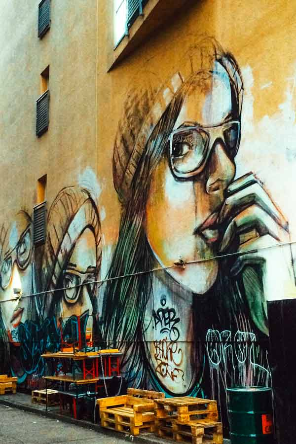
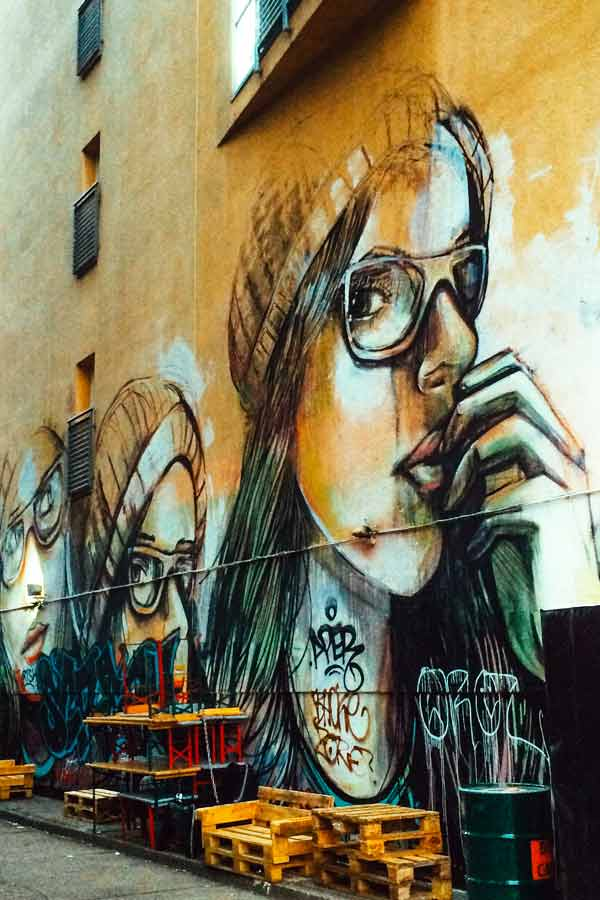
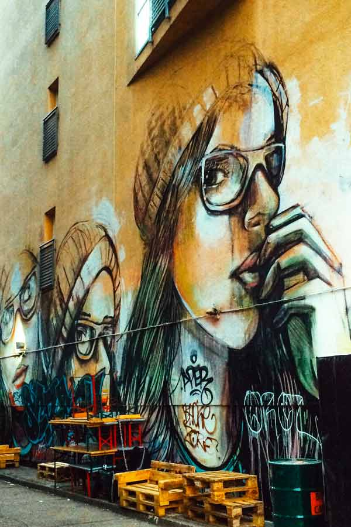

Find the best places for street art and graffiti in Berlin with this compact guide that lists the exact locations of the best Berlin murals. Recognised as one of the top street art cities in the world, Berlin is a true walhalla for street art enthusiasts and bloggers like myself. Have a look at this Berlin street art guide and let me know what you think!
You can find this large mural Suspended by Italian stencil artist Alice Pasquini on Warschauer Strasse near the East Side Gallery. Alice is one of the most respected stencil artists around so I was very excited to see such a large mural by her. Covering 150m2, I read that it took her seven days of non-stop painting to create this mural that contains six female portraits.

Art critic Emilie Trice has called Berlin “the graffiti Mecca of the urban art world.” While few people would argue with her, the Berlin street scene is not as radical as her statement suggests. Street art in Berlin is a big industry. It’s not exactly legal, but the city’s title of UNESCO’s City of Design has kept local authorities from doing much to change what observers call the most “bombed” city in Europe. From the authorities’ point of view, the graffiti attracts tourists, and the tourists bring money to a city deep in debt.
You won’t be able to miss this large tucan by Portuguese street artist Bordalo II though. Questioning today’s materialistic society, Bordalo is famous for using garbage to make his large-scale artworks. Featuring artworks by some of the world’s most famous street artists, Raw Gelände really should be your number one Berlin street art destination! However, the activities here aren’t just limited to street art hunting and drinking beer.